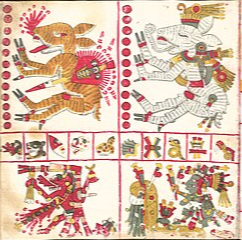

Reserva de la Biosfera de la Mariposa Monarca

Cada invierno, millones de mariposas monarca se embarcan en un viaje extraordinario desde América del Norte hasta la Reserva de la Biosfera de la Mariposa Monarca en Michoacán, México.
La comida mexicana es Patrimonio de la Humanidad

La cocina mexicana es incomparable con la del resto del mundo, por lo que fue nombrada por la UNESCO como Patrimonio Cultural Inmaterial de la Humanidad en 2010.
El origen del chocolate

El cacao es originario de México, donde los olmecas y mayas lo consumían como una bebida sagrada y amarga.
Los nahuales

Capacidad de transformarse en animales (como coyotes, jaguares o aves) usando el poder de la naturaleza o la magia.